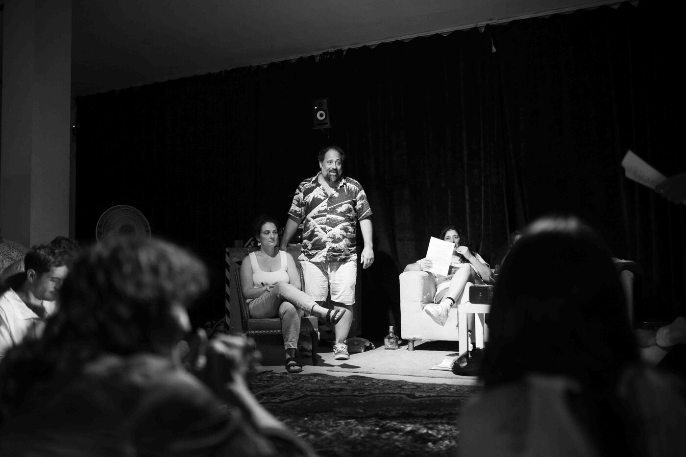
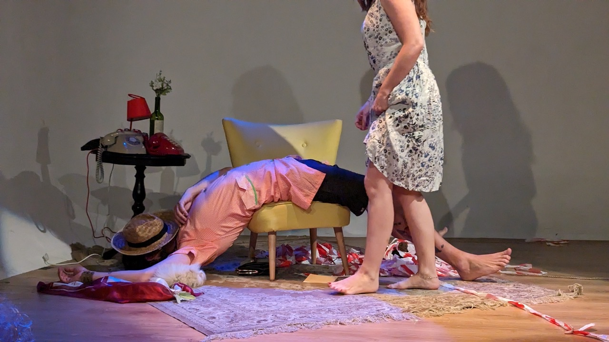
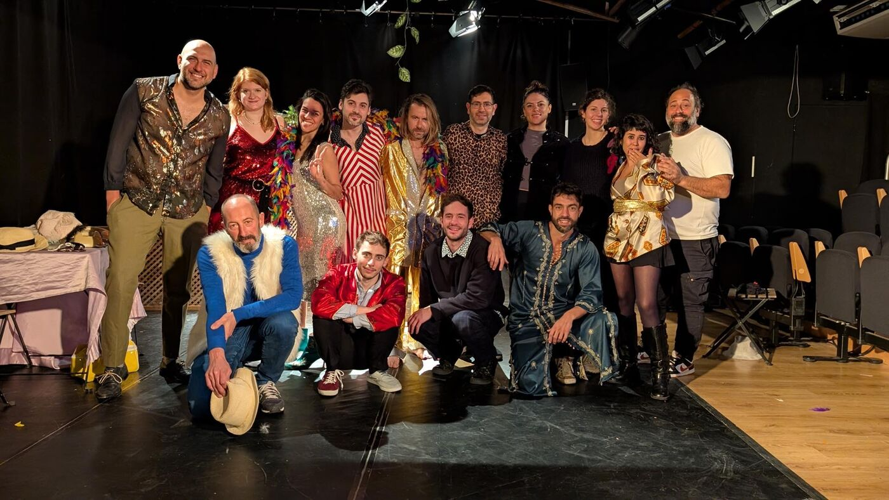
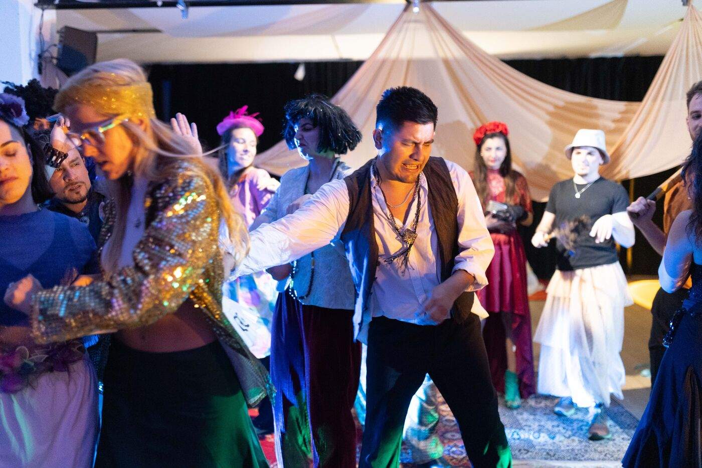
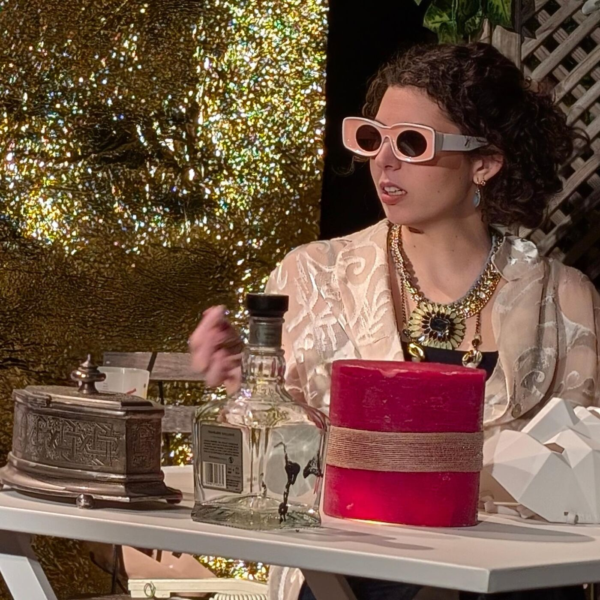
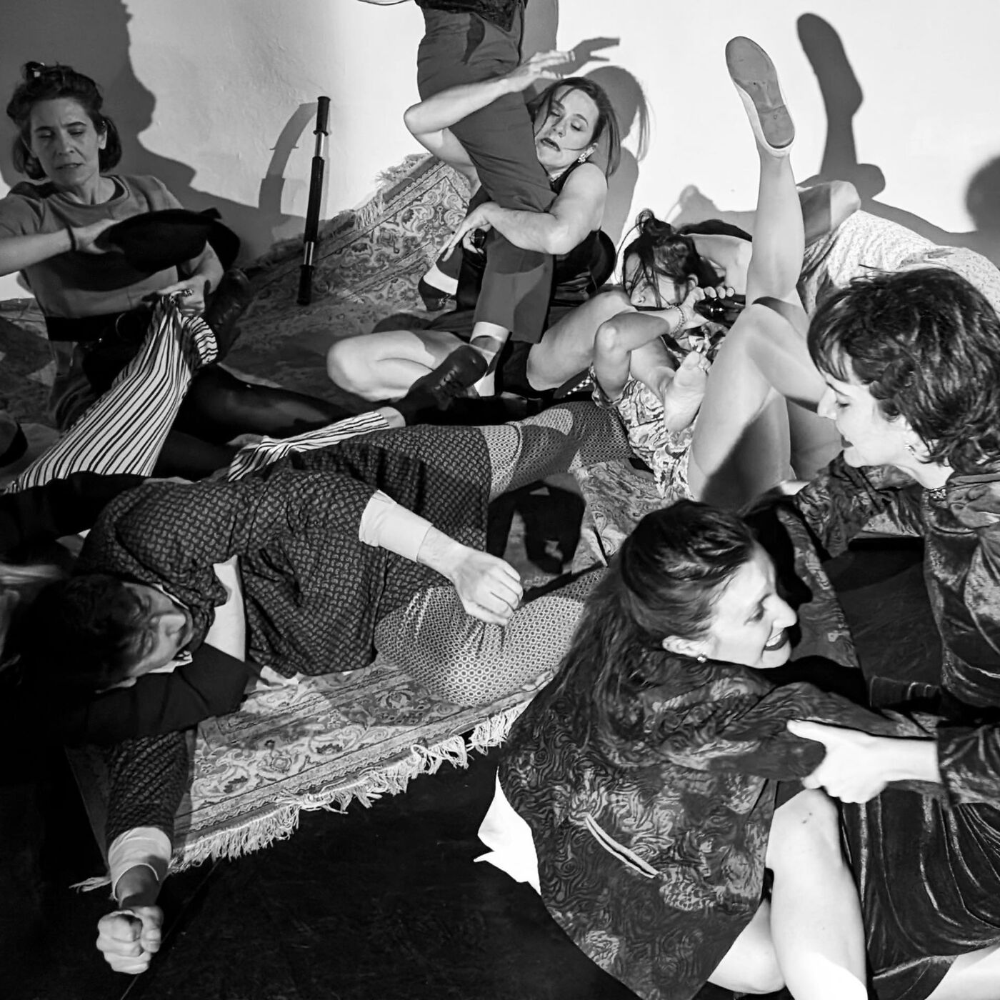
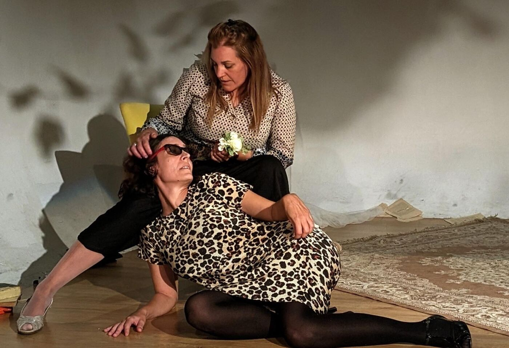
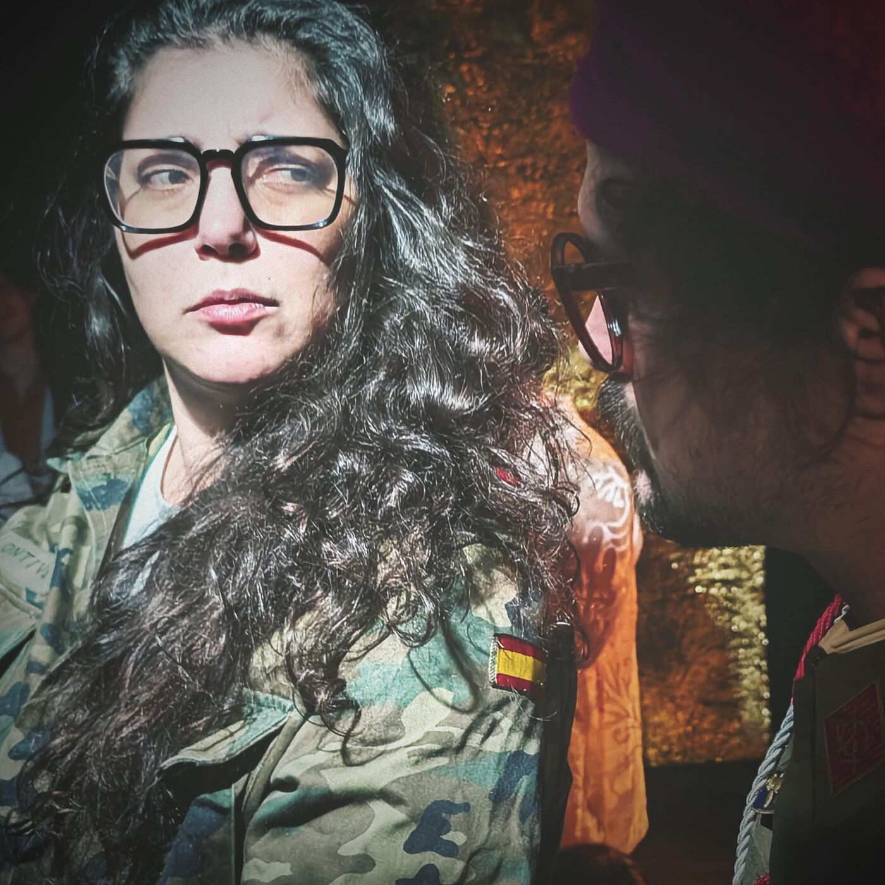

Profesores de teatro Barcelona · Sebastián Mogordoy · Candelaria Sesín
Talleres de Teatro en Barcelona · Desde 2010
Quince años investigando la actuación,
el cuerpo, la improvisación
y la escena.
Talleres de Teatro en Barcelona · Desde 2010
Quince años investigando la actuación,
el cuerpo, la improvisación
y la escena.
Propone intensidades poéticas que nos hacen soltar la representación "del personaje que somos en la vida" para arrojarnos en un no saber que nos abre a otras posibilidades de existencia.

En un mundo donde la realidad nos empuja a sobrevivir en medio de diferentes guerras, el teatro sigue siendo nuestra trinchera, nuestro refugio, lugar de expresión, experimentación e investigación, de lo humano y del proceso creativo.
Cuando la vida se pone un poco aburrida o demasiado agresiva, el teatro nos propone intensidades poéticas y expresivas que nos hacen soltar la representación "del personaje que somos en la vida" para arrojarnos en un no saber que nos abre a otras posibilidades de existencia. Nos invita a ser todo eso que no somos.


Mi forma de enseñar es transmitir. Acompañar. No responde a moldes clásicos ni a métodos cerrados. Lo que puedo ofrecer es un espacio vivo, donde se cruzan lo poético, lo sensorial, lo técnico y lo filosófico. Soy un acompañante de procesos, no solo un transmisor de contenidos. El actor no viene a aprender a "hacer", sino a "ser", a "estar", a encontrarse en escena, y transitarla, escuchando su deseo, a habitar el cuerpo como campo de conflicto y creación: un cuerpo poético. Vienen a descubrir, desplegar y comprender sus posibilidades expresivas. Vienen a dejar de representar el personaje de la vida, vienen a imaginar con el cuerpo, a trascender la forma y crear y divertirse.
A tener un encuentro real.
Pasaron 15 años desde la primera clase y aún cuando los miro actuar, y cuando veo los procesos me sigue emocionando… verlos haciendo esas cosas que hacemos, con tanta entrega, con tanta creatividad y amor propio. Gracias por permitirme tener el mejor trabajo que puedo tener: dar clases de teatro. ¡Bienvenidos!
La actuación nace del acto.
Actor, director y pedagogo teatral argentino radicado en Barcelona. Formado junto a Ricardo Bartís en el Sportivo Teatral de Buenos Aires, referencia ineludible del teatro argentino contemporáneo. Sus quince años de docencia en Buenos Aires y Barcelona han construido un método de trabajo reconocido por la comunidad teatral.
Actualmente forma parte del elenco protagónico de El Fill, de Jon Fosse, dirigida por Ferran Utzet, estrenada en el Teatre Lliure de Barcelona. Protagonizó Euforia y Desazón, de Sergio Boris, con temporada en el Festival Temporada Alta 2024, la Sala Beckett y los Teatros del Canal de Madrid. En cine, formó parte de la película El profesor, producción de Netflix.
Su trabajo actoral ha sido descrito como "de otro planeta" (elDiario.es). Dirige los talleres de Principiantes, Con experiencia y Cuerpo al texto en Gracia, Barcelona.
Se inició en la actuación a los 13 años en la ciudad de Rosario con Mirko Buchín. En Buenos Aires, se formó principalmente con Ricardo Bartís en el Sportivo Teatral, con Raúl Serrano en la Escuela de Teatro de Buenos Aires y Julio Chávez en el Instituto de Entrenamiento Actoral, entre otras actividades artísticas como canto, dramaturgia y clown.
TelevisiónFormó parte del unitario de Polka Silencios de Familia con el personaje de «Alan». Protagonizó la serie web Suplentes junto a Darío Lopilato, estrenada en el canal de la Universidad de Tres de Febrero y el canal 360. Participó del programa La última hora, de Gastón Portal, junto a Norman Brisky, Martín Slipak y Daniel Aráoz, en canal 7. Formó parte del elenco protagónico de Nini, entre otras participaciones en TV. Recientemente, El Tigre Verón con el personaje de Urquiza.
CinePermitidos de Ariel Winograd (con Lali Espósito y Martín Piroyansky) · Rancho aparte de Edy Flenher · Lluvia de Paula Hernández · Cien tragedias y Futuro perfecto de Mariano Galperín · El secreto de sus ojos (asistente de casting) · Metegol y Belgrano de Juan José Campanella · Diablo de Nicanor Loretti · Vino para robar de Ariel Winograd · El eslabón podrido de Javier Diment · Papeles en el viento de Juan Taratuto · El cadáver insepulto de Alejandro Cohen · El robo del siglo de Ariel Winograd · La corazonada (personaje de Ordóñez, con Luisana Lopilato y Joaquín Furriel, Netflix) · El profesor, Netflix · 2026.
TeatroEl Fill de Jon Fosse · dir. Ferran Utzet · Teatre Lliure · Barcelona · 2026. Euforia y Desazón de Sergio Boris · Temporada Alta · Sala Beckett · Teatros del Canal de Madrid · 2024–26. La tiranía del deseo · ciclo de funciones · Badabadoc · Barcelona. El inspector · sala Martín Coronado, Complejo Teatral de Buenos Aires · dir. Daniel Veronese · 2017. La máquina idiota de Ricardo Bartís · Sportivo Teatral · participación en Asian Art Festival (Corea) y FIBA. Fronterizos dir. Maruja Bustamante · Centro Cultural Recoleta. La funeraria de Bernardo Cappa y Martín Otero · Sportivo Teatral · Premio Teatro del Mundo 2008. Los Rocabilis y Amor a tiros dir. Bernardo Cappa · Premio Teatro del Mundo 2009 — mejor actor. Trabajo para lobos de Maruja Bustamante. Valet parking de Julio Chávez · IEA. Festival Iberoamericano de Teatro de Cádiz con La bohemia dir. Sergio Boris · 2020.
Autor y directorEl mejor lugar del mundo · Microteatro · Buenos Aires · 2018–2019.
DocenciaClases de teatro en Venática, CIC (Centro de Investigación Cinematográfica), Garrick Arte y Cultura, y como coach actoral. Desde 2010 coordina sus talleres de teatro para principiantes y avanzados, primero en Buenos Aires y desde 2020 en Barcelona. Participó en el Laboratorio de Creación I dirigido por Ricardo Bartís en el Teatro Nacional Cervantes (seleccionado entre 1000 postulantes).
El teatro como espacio de construcción colectiva.
Actriz, directora, gestora cultural y docente de teatro. Formada en Buenos Aires, donde desarrolló una trayectoria intensa en el teatro independiente como creadora y pedagoga. Radicada en Barcelona desde 2020, donde codirige los talleres junto a Sebastián Mogordoy.
Coordinó las actividades del teatro Silencio de Negras y creó junto a varios grupos diferentes ciclos de teatro independiente: Enredadera en la librería La Libre, Derrapé en Sala de Máquinas, Circuito Lumínico y Lo que dura una canción. Docente de teatro en Buenos Aires y Barcelona desde hace más de una década.
Su mirada pedagógica pone el foco en la escucha grupal, el espacio como territorio de creación, y el desarrollo de la expresividad individual dentro del colectivo. Con ella el trabajo tiene cuerpo, humor y una presencia particular que hace del grupo una banda.
Actriz, directora, gestora cultural y docente de teatro. Formada en Buenos Aires, donde desarrolló una trayectoria intensa en el teatro independiente como creadora, directora y pedagoga durante más de una década.
Teatro — Creación y direcciónCoordinó las actividades artísticas del teatro Silencio de Negras en Buenos Aires. Creó y dirigió ciclos de teatro independiente: Enredadera en la librería La Libre, Derrapé en Sala de Máquinas, Circuito Lumínico y Lo que dura una canción, con participación de grupos y artistas del circuito independiente porteño.
Gestión culturalDurante más de diez años programó y coordinó espacios y eventos de teatro independiente en Buenos Aires (2008–2020), construyendo redes entre artistas, grupos y salas alternativas. Su trabajo de gestión fue clave para sostener circuitos escénicos fuera del teatro comercial.
DocenciaDocente de teatro en Buenos Aires y Barcelona desde hace más de una década. Desde 2020 codirige junto a Sebastián Mogordoy los talleres de teatro en Barcelona (principiantes, con experiencia y cuerpo al texto). Su pedagogía se centra en la escucha grupal, el espacio como territorio de creación y el desarrollo de la expresividad individual dentro del colectivo.
esa banda milenaria
Comenzamos en el año 2010 con un pequeño grupo en el Camarín de las Musas, en Buenos Aires. Hoy seguimos haciendo y pensando el teatro que nos gusta desde Barcelona.
Más que una escuela, construimos un nosotros de actores, estudiantes y personas que buscan otra intensidad en el encuentro con la escena. Barcelona es una ciudad vibrante, llena de personas de diversas edades, costumbres y nacionalidades. Cultivamos un espacio de creación, encuentro real, expresión y construcción social.

15 años de clases, entrenamientos, funciones y procesos.










Un espacio para actuar,
pensar, imaginar
y estar con otros.